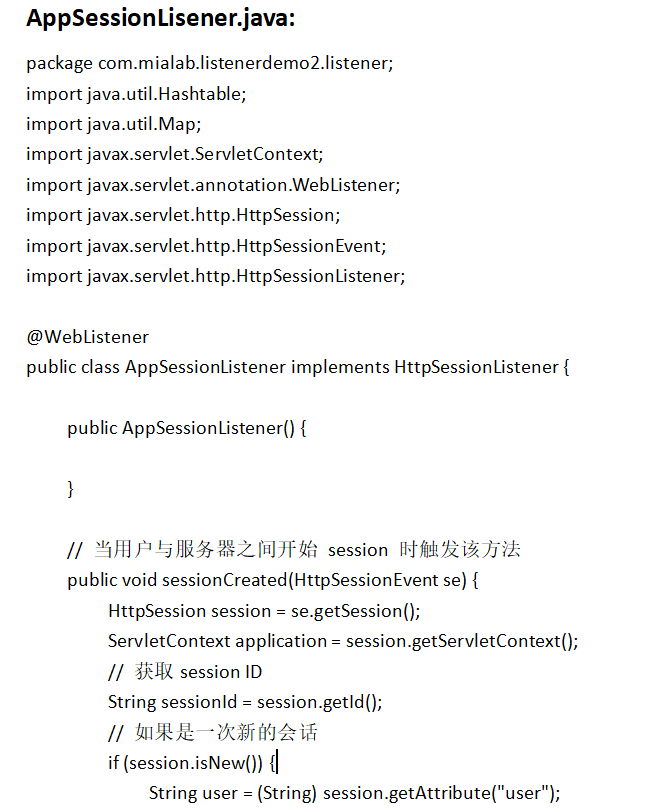
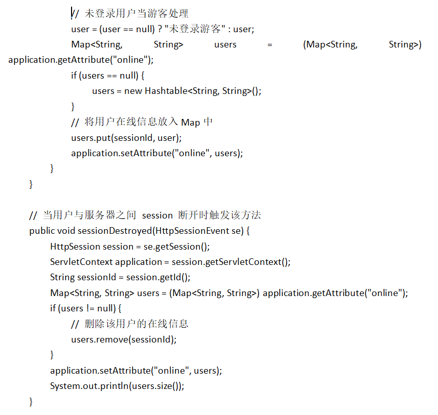
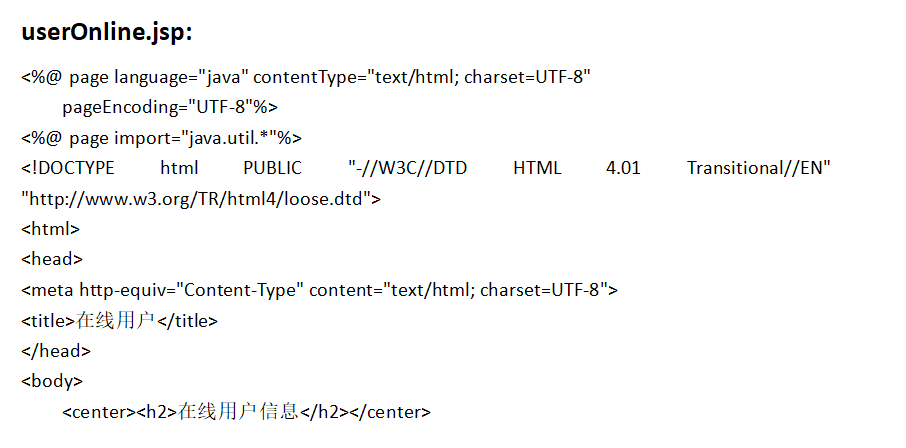
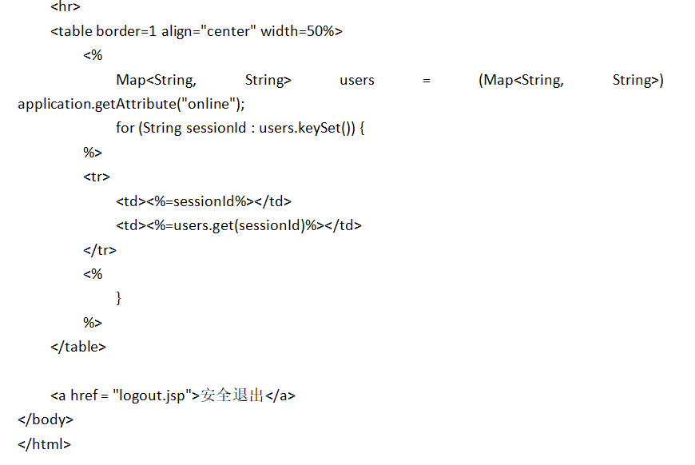

1.过滤器的生命周期是什么？过滤器是否为单项的过滤过程？请编程加以说明.
过滤器的生命周期分为四个阶段：加载和实例化→初始化→
执行doFilter（）方法→销毁。
过滤器通常是单向的。
编程实现：




2.监听器的作用是什么？有哪些常用的监听器？
监听器是一种Servlet中的特殊的类，它们能帮助开发者监听web中的特定事件，比如ServletContext,HttpSession,ServletRequest的创建和销毁；变量的创建、销毁和修改等。可以在某些动作前后增加处理，实现监控。
通常使用Web监听器做以下的内容：
1.统计在线人数，利用HttpSessionLisener
2.加载初始化信息：利用ServletContextListener
3.统计网站访问量
4.实现访问监控